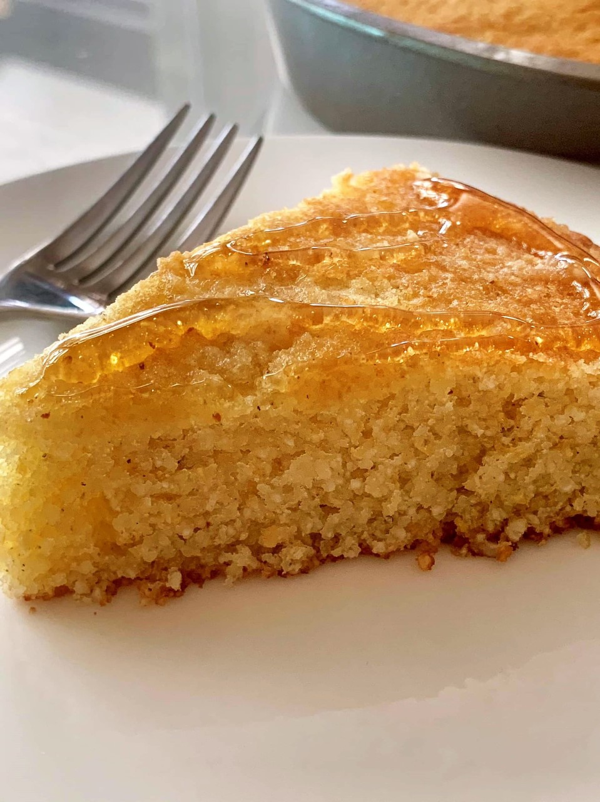

GOLDEN SWEET CORNBREAD

cornbread that my bubu loves
ingredients
dry
- 1 cup all-purpose flour
- 1 cup yellow cornmeal
- 2/3 cup white sugar
- 3 1/2 teaspoons baking powder
- 1 teaspoon salt
wet
- 1 egg
- 1 cup milk
- 1/3 cup vegetable oil
steps
- preheat oven to 400 degrees F (200 degrees C) and spray or lightly grease a 9 inch round cake pan
- in a large bowl combine dry ingredients and mix in wet ingredients
- bake in a preheated oven for 20-25 minutes, or until a toothpick inserted into the middle of the loaf comes out clean